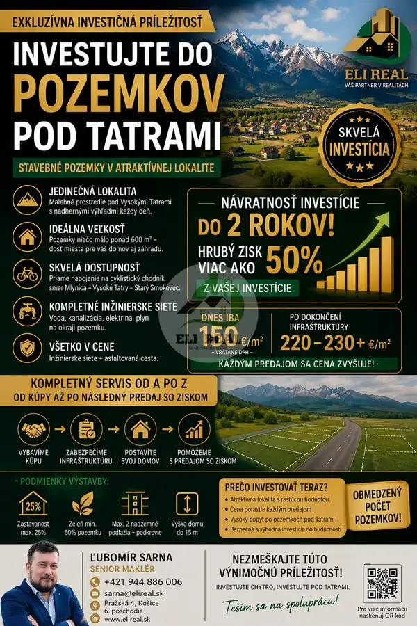
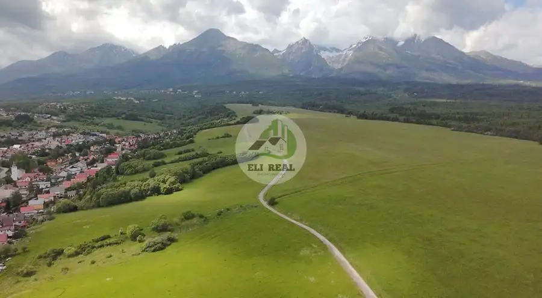
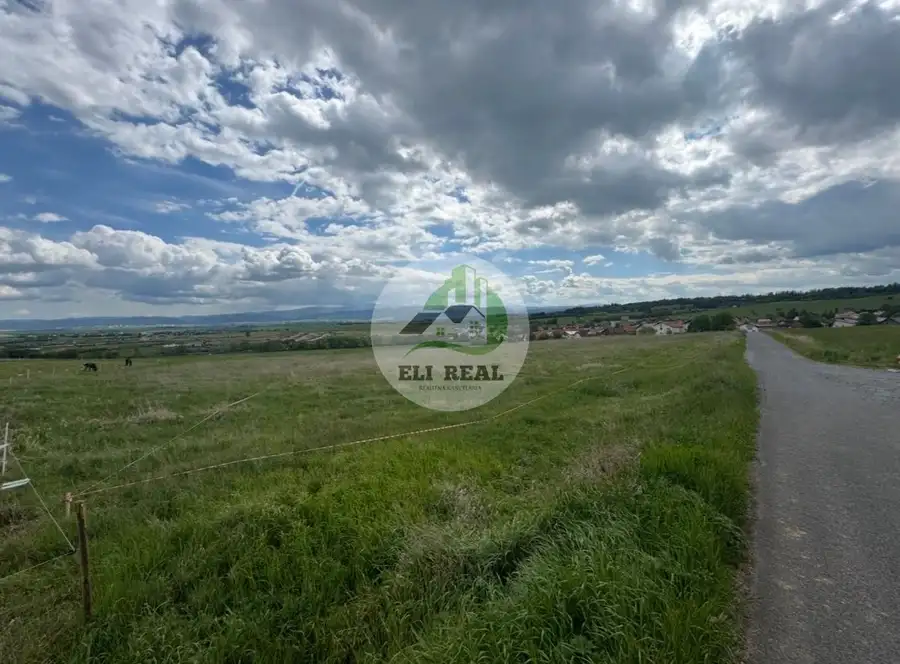
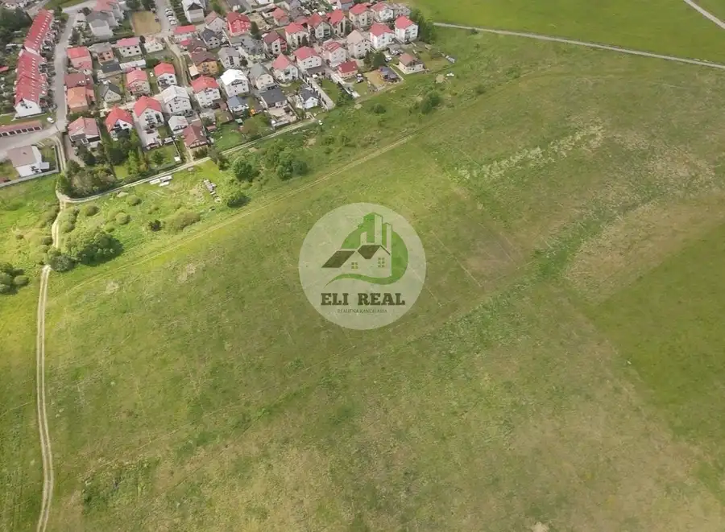
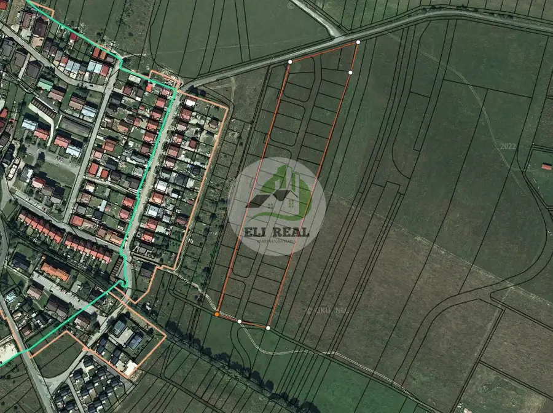
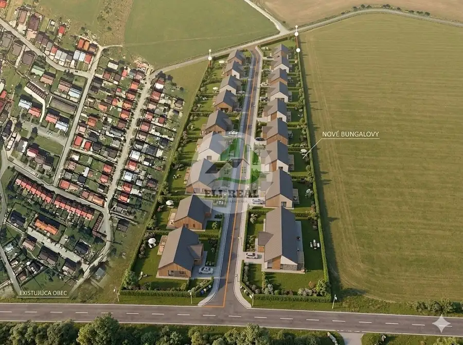
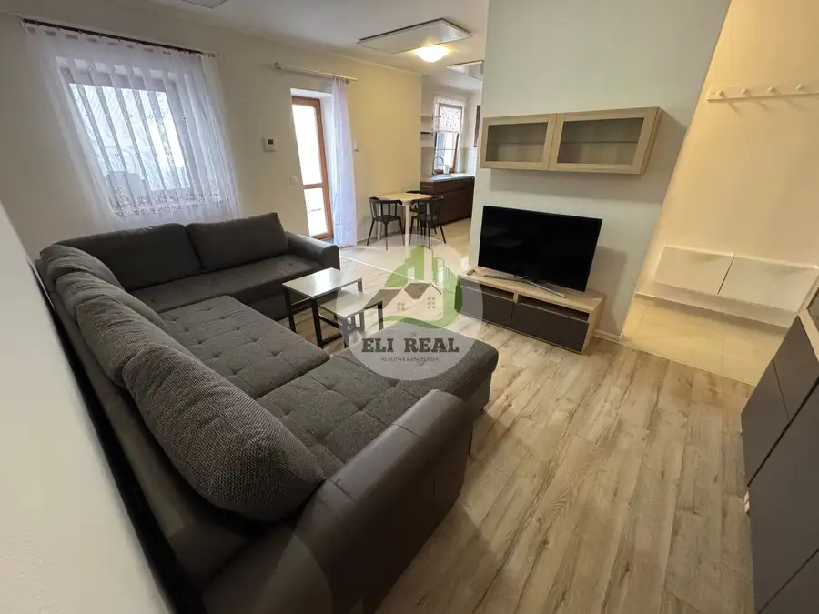
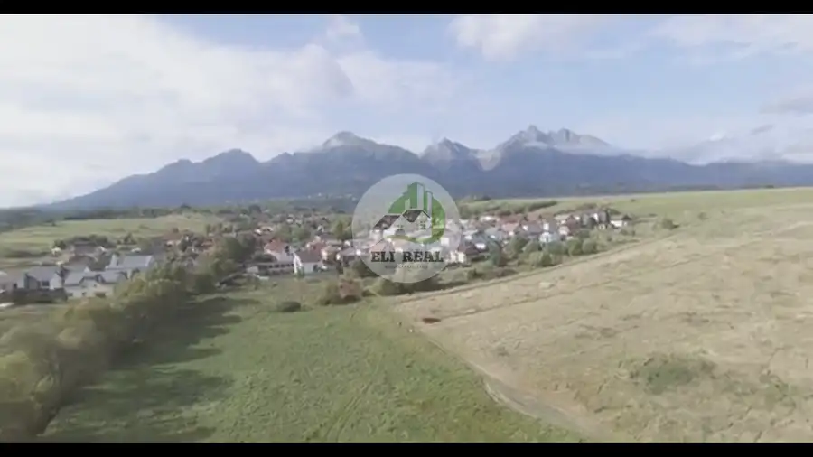

Skvelá investícia pozemok na rodinný dom v obci Nová Lesná
Nová Lesná






- Plocha600 m²
O nehnuteľnosti
Video :youtu.be/6rZRAM21q3o?is=06niVYU5tbOtIzxXPonúkam na predaj pozemky na výstavbu rodinných domov v podtatranskej obci Nová Lesná s krásnym výhľadom na celú panorámu Vysokých Tatier. Na okraji pozemku zabezpečíme nasledujúce inžinierske siete:- Voda- Kanalizácia (odpadové vody)- Elektrina- PlynVýstavba vodovodného a kanalizačného potrubia taktiež stiahnutie ornice a následné spevnenie cesty makadámom by mala započať každú chvíľu, čakáme už len na právoplatné stavebné povolenie, sme v štádiu doriešenia prístupovej cesty. K pozemkom bude viacero prístupov, všetko Vám rád vysvetlím a ukážem na obhliadke. Dokončenie – teda kompletné vybavenie všetkých nehnuteľností je plánované na jeseň 2026. Cestu postaví tiež developer aj bude potiahnutá finálnym asfaltom, najneskôr do troch rokov, pokiaľ bude už prevažná väčšina domov postavená, aby sa predišlo poškodeniu cesty vozidlami stavby.veľkosti pozemkov ideálnych niečo málo nad 600 m2cena: 150€/m2 už vrátane DPH V cene sú zahrnuté IS aj asfaltovanie cesty.Zastaranosť pozemku maximálne 25%, plocha zelene pozemku je minimálne 60%.Rodinný dom riešiť maximálne ako 2 nadzemné podlažia plus podkrovie.Celkovú výšku rodinných domov vrátane nadstrešných konštrukcií navrhovať do 15 metrov nad pôvodnú úroveň terénu. Pohľad profesionála na túto kúpu:V prípade vážneho záujmu maklér radí aby ste si jeden z pozemkov rezervovali ešte teraz za pomerne lukratívnu sumu,keďže ďaľším následným predajom cena pôjde už len vyššie.Ak ste investor je to pomerne zaujímava investícia, už len v prípade kúpy za aktuálne ceny s následným predajom, po obsadení všetkých pozemkov a dokončenia infraštruktúry si na tom viete pekne zarobiť za pomerne krátku dobu, Predpoklad návratnosti cca do dvoch rokov od kúpy, predokladaná výška Vášho hrubého zisku je viac ako polovica Vašej investície. Nehovoriac o rôzných možnostiach výstavby s následným predajom či prenájmom. V cene nehnuteľnosti sú zarátané všetky poplatky aj kompletný servis RK.Pre viac informácií či obhliadku ma neváhajte kontaktovať.Ak máte záujem o pomoc s predajom Vašej nehnuteľnosti neváhajte ma kontaktovať.Rád Vám pomôžem, rád poradím, poriešime aj financovanie, kompet servis.AK chcete kúpiť, nájdem Vám podľa Vaších predstáv čo potrebujete, poriešim cenu.Chcete investovať ? Mám pre Vás viacero možností na Slovensku, ale aj v zahraničí.Kontakt:0944 886 006sarna@elireal.sk
Parametre
- Druh
- Pozemok pre rodinné domy
- Dátum zverejnenia
- 29. 10. 2025
- Elektrina
- Pri pozemku - 230 V
- Odpadové vody
- Pri pozemku - Kanalizácia
- Plocha pozemku
- 600 m²
- Plyn
- Pri pozemku
- Pripravenosť k výstavbe
- Predbežný súhlas
- Terén pozemku
- Mierne svahovitý
- Typ
- Predaj
- Voda
- Pri pozemku - Verejný vodovod
Kde to je


Mohlo by Vás zaujímať

BytNové 155 000 €Na predaj 2-izbový byt 60m² + terasa 35 m² | Spišská Belá – námestie Spišská Belá 2-izbový95 m²2. podlažie PozemokNové
Cena na vyžádáníNa predaj pozemky NOVÁ LESNÁ - krásne bývanie ale aj ideálna investícia
Nová Lesná
600 m²
PozemokNové
Cena na vyžádáníNa predaj pozemky NOVÁ LESNÁ - krásne bývanie ale aj ideálna investícia
Nová Lesná
600 m²

PozemokNové 120 390 €21. Pozemok 814m2 na RD v Novej Lesnej Nová Lesná 814 m²